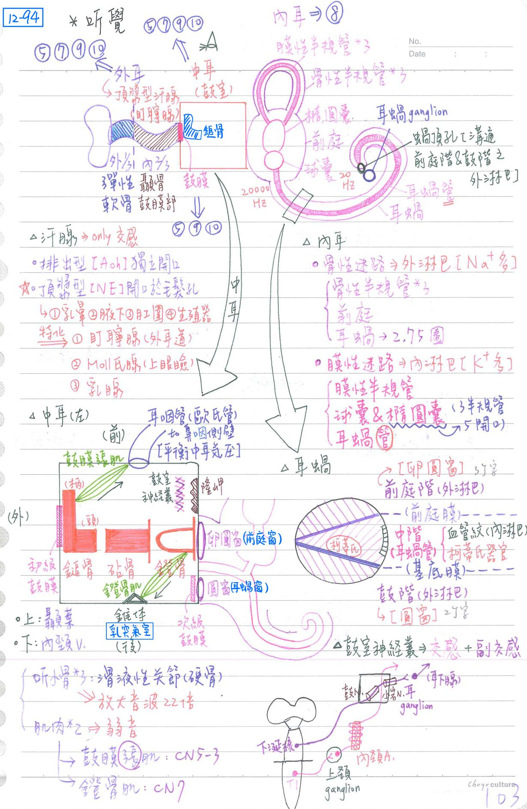
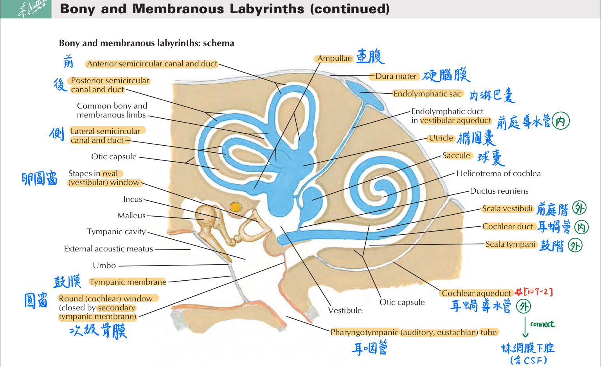
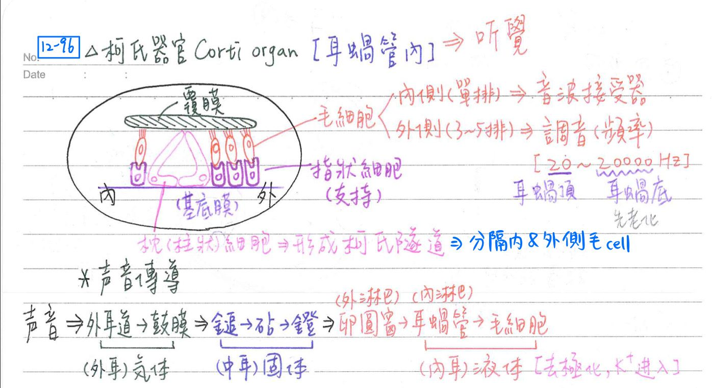
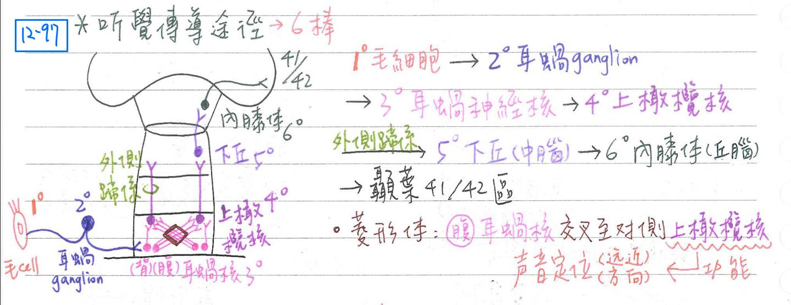
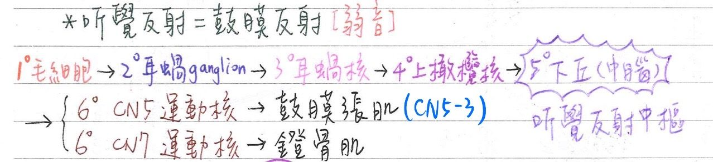
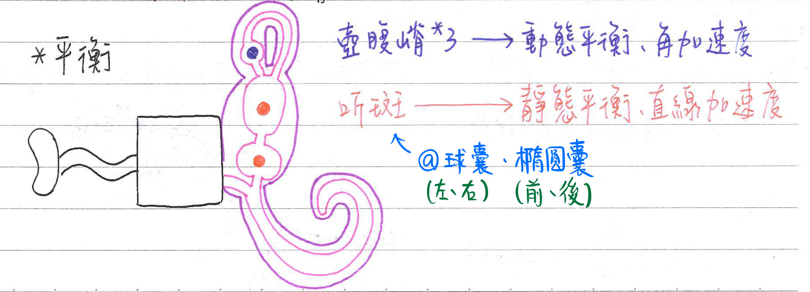
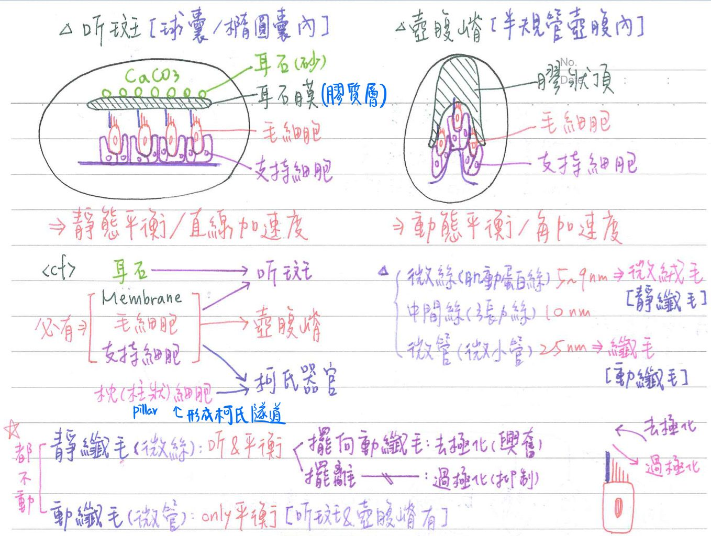
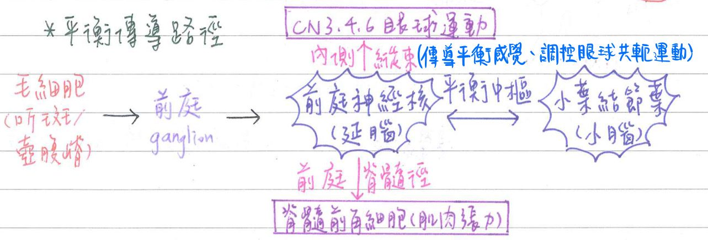

👂🏻 特殊感覺-聽覺&平衡覺
耳之神經支配 [陷阱：除了內耳以外都沒有CN8！]
- 外耳：CN5, 7, 9, 10(GSA)
- 中耳：CN5, 7, 9, 10(GVA)
- 內耳：CN8(SSA)
- 鼓膜(tymparic membrane)：CN5, 9, 10(缺CN7)
耳朵構造
外耳：
- 外耳道(ext. meatus)：呈S形，外1/3為彈性軟骨；內2/3為硬骨(顳骨)
- 耵聹腺(ceruminous gland)：屬於頂漿型汗腺之特化，可製造耵聹(耳垢)
- 鼓膜(tympanic membrane)：為外耳與中耳之交界，其上有鎚骨(柄)附著
中耳=鼓室(tympanic cavity)
- 構造：
- 前壁：
- 耳咽管(auditory tube)=歐氏管(Eustachian tube)
→連接中耳前壁與鼻咽側壁；功能為平衡中耳氣壓 - 內頸A通道(internal carotid a. canal)
- 耳咽管(auditory tube)=歐氏管(Eustachian tube)
- 後壁：乳突氣室(mastoid aircells)入口，錐體(pyramid)
- 內壁：隆岬(promontary)
- 卵圓窗(前庭窗)：以鐙骨底封閉
- 圓窗(耳蝸窗)：以次級鼓膜(2nd tympanic membrane)封閉
- 外壁：鼓膜
- 上壁：與腦膜/大腦顳葉隔一薄骨板
- 下壁：與內頸V.(頸靜脈球)隔一薄骨板
- 前壁：
- [重點]具3個聽小骨：鎚骨(malleus)→砧骨(incus)→鐙骨(stapes)
[hint：拿鐵鎚去打砧板，可以做出馬鐙]- 彼此間為滑液性關節，其功能為放大音波22倍
- 具2條肌肉：防止音震過大(即弱音作用) [hint：肌肉起點不動，運動方向：終點往起點]
→若此二條肌肉麻痺：聽到之音量比正常人更大
[考很細，要記得彼此怎麼connect]- 鼓膜張肌(tensor tmpanim；★CN5-3支配)
- 連接耳咽管[起端]及鎚骨柄[止端]，收縮時將鎚骨向內拉(向內向前)
- 鐙骨肌(stapediusm；CN7支配)
- 連接中耳錐體[起端]及鐙骨頸[止端]，收缩時將鐙骨向外拉(向外向後)
- 鼓膜張肌(tensor tmpanim；★CN5-3支配)
- 鼓室神經叢(tympanic plexus)：位於中耳內壁隆岬上，支配鼓室黏膜
- 鼓室N(tympanic n.)：CN9分枝
- 小岩N(lesser petrosal n.)：下涎核(CN9副交感節前)神經纖維
- 內頸動脈神經叢(int. carotid plexus)：上頸神經節(交感節後)
內耳
- 骨性迷路(不規則隧道)：含外淋巴(perilymph)；約等於細胞外液(Na+多)
- ★[109-2]外淋巴透過cochlear aqueduct與蛛網膜下腔相交通
- 三骨性半規管(semicircular canal)：互相垂直(上=前、後、外=水平)
- 前庭(vestibula)
- 耳蝸(cochlea)：耳螺旋管(長35mm)，環繞蝸軸(modiolus)共2.75圈
- 蝸軸：為骨性結構，内含血管、耳蝸N、螺旋(耳蝸)神經節
- [重點]膜性迷路：含內淋巴(endolymph)；約等於細胞內液(K+多)
- 內淋巴由血管紋(stria vascularis)製造，其位於耳管外側壁
- ★[109-2]三個膜性半規管：具壺腹嵴(crista ampullaris)→動態平衡
- 球囊(saccule)、橢圓囊(ucricle)：具聽斑(macula)→靜態平衡
- 耳蝸管(cochlea duct)：具柯氏器官(Corti organ)→聽覺
耳蝸(cochlea)
- 中：耳蝸管(cochlea duct)=中階(scala media)→含內淋巴
- 上：前庭階(scala vestibula)→含外淋巴
- 耳蝸管與前庭階之隔膜為前庭膜(vestibular membrane, Reissner membrane)
- 下：鼓階(scala tympani)→內含外淋巴
- 耳蝸管與鼓階之隔膜為基底膜(basilar membrane)
- 前庭階與鼓階之外淋巴僅由蝸頂孔(helicotrema)相通
- 前庭階外鄰卵圓窗；鼓階外鄰圓窗
內耳前庭
- 内外淋巴不互通，但內、外淋巴各自互通
- 橢圓囊：有3條半規管的5個開口，與膜性半規管中內淋巴相通
- 球囊：與耳蝸管中內淋巴相通


聽覺(hearing)
- 聽覺接受器：柯氏器官(Corti organ)，含3種cell
- 位於耳蝸管內，基底膜上
- [重點]毛細胞(hair cell)：上具覆膜(tectorial membrane)
- 內側毛細胞：音波接受器；單排
→真正的聽覺受器 - 外側毛細胞：調節音頻(tuning：20~20,000Hz)；3~5排(較多)
→調整要聽哪個頻率的聲音
- 內側毛細胞：音波接受器；單排
- 支持細胞=指狀細胞(phalangeal cell)
- 柱狀細胞(pillar cell)：形成柯氏隧道(tunnel of Corti)
→分隔內側與外側毛細胞
聲音傳導(conduction)
- 毛細胞上的離子通道：因內淋巴流動而打開→K+(內淋巴較多的離子)流入細胞→毛細胞去極化
※全身細胞大多去極化都是Na+流入細胞；少數例外：毛細胞(K+) - 傳導路徑：
- 氣體傳導(外耳)：外耳道→鼓膜→
- 固體傳導(中耳)：鎚骨→砧骨→鐙骨→
- 液體傳導(內耳)：卵圓窗(外淋巴)→耳蝸管(內淋巴)→毛細胞

聽覺傳導途徑(pathway)：6棒neuron
- (1°)柯氏器官(毛細胞)→(2°)耳蝸(螺旋)神經節→耳蝸N→
- (3°)耳蝸神經核→(4°)上橄欖核(菱形體後核/外側蹄系核)→外側蹄系
- (5°)下丘(中腦)→(6°)丘腦(內膝體)→大腦顳葉(41,42區)
- 前、後耳蝸神經核(anterior & posterior cochlar nu.)：
- 耳蝸(螺旋)神經節(spiral ganglion of the cochlea)：神經纖維經耳蝸
N(cochlear n)自橋腦下緣進入橋腦→分別傳至前、後耳蝸神經核
(緊臨下小腦腳) - 再由前、後耳蝸神經核傳至同側與對側(數量較多)之上橄欖核(sup.olivarynu.)或菱形體後核(post. nu. of the trapezoid body)
- 耳蝸(螺旋)神經節(spiral ganglion of the cochlea)：神經纖維經耳蝸
- 菱形體(trapezoid body)：位橋腦尾端
- 由★[107-2]前耳蝸神經核(anterior cochlear nucleus)交叉投射到對側上橄欖核的神經纖維構成
- 上橄欖核：可幫助聲音遠近&方向之定位(localization)←因為有接收雙側聽覺訊息
- 外側蹄系(lateral lemniscus)：位於腦幹
- 由上橄欖核傳至中腦下丘之神經纖維構成
- 部份神經纖維中間可經外側蹄系核(nu. of lateral lemniscus)轉接再傳至下丘
- 內囊之聽覺輻射(acoustic radiation of the internal capsule)：位於大腦髓質
- 由丘腦之內膝體傳至大腦之初级聽覺皮質(41, 42)之神經纖維構成
- 初級聽覺皮質：位於上顳葉腦回(gyrus of Heschl)
- 分佈：
- 低頻：耳蝸頂(apex)→大腦顳葉前外側
- 高頻：耳蝸底(base)→大腦顳葉後内側

聽覺反射(auditory reflex)=鼓膜反射(tympanic reflex)：防音震過強
- (1°)柯氏器官(毛細胞)→(2°)耳蝸(螺旋)神經節→耳蝸N→
- (3°)耳蝸神經核→(4°)上橄欖核(菱形體後核/外側蹄系核)→外側蹄系
- (5°)下丘(聽覺反射中樞；中腦)→以下傳至兩處：
- 三叉神經運動核→鼓膜張肌(CN5-3) ：減少鎚骨振動
- 顏面神經運動核→鐙骨肌(CN7)：減少鐙骨振動

平衡(equilibrium)
聽斑(macula)：雖然叫聽斑但是它是管平衡的
- 功能：靜態平衡&直線加速度之接受器
- 位置:位於球囊&橢圓囊
- 球囊(saccule)：長軸呈鉛直，偵測左、右傾斜程度(水平加速平衡覺)
- 橢圓囊(utricle)：長軸呈水平，偵測前、後傾斜程度(垂直加速平衡覺)
- 構造：
- 毛細胞：具多條(40-80)長度遞增之靜纖毛(stereocilia) & 單一條動纖毛(kinocilia)
- 支持細胞(supporting cell)
- 耳石膜(otolithic membrane)=膠質層(gelatinous layer)
- 耳石(otolith)=耳沙(otoconia=statoconia)：碳酸鈣
壺腹峭(crista ampullaris)：
- 功能：動態平衡&角(旋轉)加速度之接受器
- 位置：位於半規管壺腹；3個，彼此垂直
- 上(superior)：偵測上、下方向變化
- 外(lateral)：偵測左、右方向變化
- 後(posterior)：偵測前、後方向變化
- 構造：
- 毛細胞：同聽斑的構造(多條靜纖毛+動纖毛)
- 支持細胞(supporting cells)
- 膠質頂(cupula)：壺腹崎無耳石
- 靜纖毛(stereocilia)：sensory hair；由微絲體(microfilament)形成
- 前庭系統之毛細胞具單一動纖毛(kinocilium)，實際上不動(immotile)，由微管體(microtubule)形成
- 靜纖毛擺向動纖毛→去極化(興奮)；其擺離動纖毛→過極化(抑制)
- 內耳平衡系統障礙之主要病徵：眼球震顫(nystagmus)、暈眩(vertigo)
- 比較：
- 管聽覺的毛細胞(耳蝸)：僅有靜纖毛
- 管平衡的毛細胞(前庭&半規管)：有多條靜纖毛+動纖毛(kinocillum)
備註
BTW這邊何宣寫錯了
2019版 p.176, 178(corti organ沒有動纖毛)


人體之平衡協調
- 輸入：
- 內耳前庭系統：聽斑&壺腹嵴
- 本體感覺：脊髓後柱(薄束/楔形束)&脊髓小腦徑
- 視覺
- 中樞：延腦(前庭神經核)↔小腦(小葉結節葉)
- 輸出：
- 內側縱束(medial longitudinal fascicls)→眼球運動
- 前庭眼球反射(vestibule-occular refex)：頭移動，眼跟著移動→維持視網膜影像之恆定
- 前庭脊髓徑(vestibulospinal tract)→調整肌肉張力

📖 書本補充：與筆記不同或筆記沒寫到的地方
⚠️
以下為對照書本後整理，筆記原文未更動。標「筆記 vs 書」的是兩邊寫法不同、建議回頭確認的地方。
中耳（p.520–521）
- 聽小骨相接：鎚骨柄接鼓膜及鼓膜張肌的肌腱，鎚骨頭部接砧骨；砧骨接鎚骨和鐙骨；鐙骨足板貼在卵圓窗上（107-1-16：鼓膜張肌腱附著在鎚骨柄，不是砧骨）。
- 肌肉：鼓膜張肌（V3）拉緊鼓膜以降低震動的力道；鐙骨肌（顏面N）將鐙骨往後拉，避免過度震動。
- 鼓索神經（筆記沒寫）：走在鎚骨和砧骨之間、跨在鼓膜張肌上方，再由岩鼓裂（petrotympanic fissure）鑽出到顳下窩加入舌神經。
- 鼓室神經叢：鼓室神經（CN IX）加交感纖維組成，主要分支＝岩小神經。
- 耳咽管開口在鼓室的前壁，另一端開在鼻咽；後壁通往乳突，內、外壁分別是內耳與外耳道的壁（112-2-11）。
- 筆記 vs 書：鼓膜的神經，筆記寫「CN5、9、10（缺 CN7）」；書上考題 113-1-6 的答案是三叉、顏面、舌咽、迷走四條都有——鼓膜內側面由舌咽神經的鼓室神經支配，外側面則由三叉、顏面及迷走神經各有分支支配（只有前庭耳蝸神經不支配鼓膜）。
- 筆記 vs 書：中耳的感覺，筆記寫「中耳：CN5、7、9、10」；書上考題 111-2-12 指出鼓室黏膜的一般感覺由舌咽神經（經鼓室神經叢）負責，作答時選 CN IX。
內耳（p.522–523）
- 骨性迷路（充滿外淋巴）：
- 耳蝸：內含耳蝸管；蝸軸（modiolus）是血管和耳蝸神經分支所在。
- 前庭：內含橢圓囊和球囊；卵圓窗貼在其外側壁。
- 半規管：前、後、外側，內含半規導管。
- 膜性迷路（充滿內淋巴）：耳蝸管（中階）隔開前庭階與鼓膜階；上為前庭膜、下為基底膜，Corti 氏（螺旋）器位於基底膜上；橢圓囊與球囊的特化感覺上皮＝斑（macula）；半規導管的壺腹上有壺腹嵴。
- 書的提示：斑、壺腹嵴及螺旋器上都有毛細胞；斑與壺腹嵴由前庭支支配，螺旋器由耳蝸支支配。
- 考題補充：壺腹嵴偵測的是頭部旋轉，直線加速度與重力是斑負責（101-2-33）；外淋巴存在骨性迷路（前庭階、鼓階），可經管道與蛛網膜下腔相通（109-2-2）。
前庭耳蝸神經（p.500–501）
- 前庭部：
- 初級神經元＝前庭神經節；周邊來自半規管壺腹、橢圓囊和球囊。
- 次級神經元＝橋腦和延髓的四個前庭核。
- 中樞投射：
- 眼外肌運動核：走內側縱束（MLF），參與前庭眼球反射。
- 小腦：經下小腦腳到蚓部和小葉結狀葉（維持平衡）；前庭核與小腦的連接主要經頂核（108-1-15：不是齒狀核）。
- 大腦皮質：經丘腦腹後（VP）核（認知頭部的位置和運動）。
- 脊髓：經外側和內側前庭脊髓徑（到伸肌調節姿勢）。
- 交叉：外側前庭脊髓徑和到小腦的纖維不交叉。
- 耳蝸部：
- 初級神經元＝螺旋神經節；周邊為螺旋器。
- 次級神經元＝背側和腹側耳蝸核；再到上橄欖核。
- 中樞投射：形成外側蹄系到下丘→經下臂（inferior brachium）到內側膝狀體→經聽覺放射（走在內囊的豆狀核下部）到顳葉主要聽覺皮質（第41區）。
- 交叉：主要為交叉纖維，形成斜方體（trapezoid body）（筆記的「菱形體」）。
- 筆記 vs 書：聽覺路徑的神經元編號，筆記把毛細胞算作 1°、螺旋神經節算 2°、耳蝸神經核 3°（共6個）；書上把螺旋神經節算初級神經元、耳蝸核與上橄欖核為次級。另外筆記寫初級聽覺皮質＝41、42 區，書寫41 區（42 區在 p.433 的圖上歸為聽覺連絡區）。
- 書的提示：
- 視覺 vs 聽覺路線：分別經過上丘／下丘、傳入外側／內側膝狀體、投射到枕葉 17 區／顳葉 41 區。
- 上橄欖核在聽覺路線上；下橄欖核則發出橄欖小腦纖維（攀爬纖維），交叉後由下小腦腳進入小腦，與聽覺無關（104-1-5）。
- 考題補充：
- 聽覺在內側膝狀體之前可傳入兩側；由膝狀體到聽覺皮質的投射只有單側（107-2-14）。
- MLF 不參與瞳孔光反射；它位於第四腦室／大腦導水管腹面靠中線處，與眼球垂直共軛運動有關（102-1-3）。
- MLF 的下行纖維可維持身體平衡，上行纖維連接 CN III、IV、VI 影響眼球運動（112-1-3）。
📝 書中歷屆考題（點選答案作答）
102-2-3p.501
下列有關聽覺之敘述，何者錯誤？
💡 聽覺路線會交叉到對側，可傳入兩側的大腦顳葉。
103-2-41p.501
聲波傳至柯蒂氏器 (organ of Corti) 後再經由下列何者傳至中樞？
105-1-9p.502
與聽覺傳遞有關的神經節是：
104-1-5p.502
下列何者與聽覺無關？
💡 下橄欖核的纖維經下小腦腳進入小腦（攀爬纖維），與聽覺無關。
106-2-14p.502
大腦初級聽覺皮質 (primary auditory cortex) 之傳入訊息，主要來自何處？
💡 上丘與丘腦枕部處理視覺訊息；斜方體是聽覺訊息進入腦幹後交叉到對側的纖維。
107-2-14p.502
聽覺傳導路徑 (auditory pathway) 之敘述，下列何者錯誤？
💡 內側膝狀體之前聽覺訊息可傳入兩側；由膝狀體到聽覺皮質的投射只有單側。
109-1-15p.503
丘腦內側膝狀體 (medial geniculate body of thalamus)，主要投射至下列何處？
💡 顳橫回即主要聽覺皮質第 41 區。
102-1-3p.503
下列有關內側縱束 (medial longitudinal fasciculus) 之敘述，何者錯誤？
108-1-15p.503
關於前庭神經核 (vestibular nuclei) 的敘述，下列何者錯誤？
💡 前庭神經核與小腦主要經頂核連接（前庭小腦）；與齒狀核聯繫的是新小腦。
109-1-2p.503
下列何者連接前庭神經核 (vestibular nucleus) 與控制眼球運動之神經核？
112-1-3p.503
下列何者是源自前庭神經核 (vestibular nuclei) 的神經纖維構造，能影響眼球運動以及身體的平衡？
💡 內側縱束的下行纖維可維持身體平衡，上行纖維與 CN III、IV、VI 連接影響眼球運動。
107-1-16p.521
關於聽小骨之敘述，下列何者錯誤？
💡 鼓膜張肌的肌腱附著在鎚骨柄上。
111-2-12p.521
下列那一條神經負責中耳鼓室 (tympanic cavity) 內黏膜的一般感覺？
💡 鼓室黏膜的感覺由鼓室神經叢（舌咽神經的分支）負責。
112-2-11p.521
耳咽管 (auditory tube) 開口於鼓室腔 (tympanic cavity) 的何處？
💡 後壁通往乳突，內、外壁分別構成內耳和外耳道的壁；耳咽管另一端開口在鼻咽。
113-1-6p.521
鼓膜 (tympanic membrane) 的體感覺由下列那些神經支配？①三叉神經 (trigeminal nerve) ②顏面神經 (facial nerve) ③前庭耳蝸神經 (vestibulocochlear nerve) ④舌咽神經 (glossopharyngeal nerve) ⑤迷走神經 (vagus nerve)
💡 前庭耳蝸神經只支配內耳；鼓膜內側面由舌咽神經的鼓室神經支配，外側面由三叉、顏面及迷走神經的分支支配。
101-2-33p.523
有關內耳 (inner ear)，下列敘述何項錯誤？
💡 壺腹嵴負責偵測頭部旋轉的運動。
109-2-2p.523
有關內耳外淋巴 (perilymph) 的敘述，下列何者錯誤？
💡 外淋巴存在於骨性迷路；連接圓窗和卵圓窗的管道即前庭階和鼓階，內含外淋巴，並經管道與蛛網膜下腔相通。